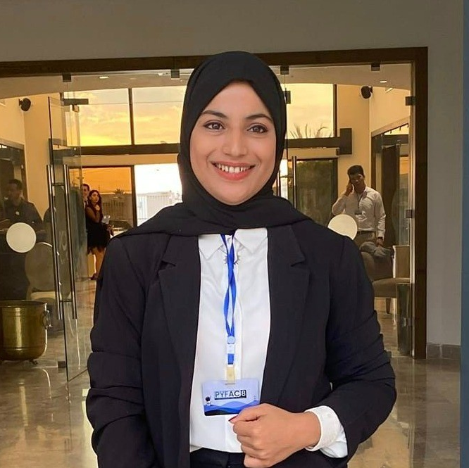

Olivia startup competition
Second place, national startup competition.
I graduated from ENIS and went straight into Odoo.
What I enjoy most is the moment a functional need stops being vague.

Second place, national startup competition.
IEEE Student Branch, Microsoft Tech Club, event organiser.
Problem-solving, volunteering, strategy and collaborative games.